First-order Spatial Point Patterns Analysis Techniques
Density-based
Kernel density estimation
Quadrat analysis,
Distance-based
Nearest Neighbour Index
Basic concept of density-based measures
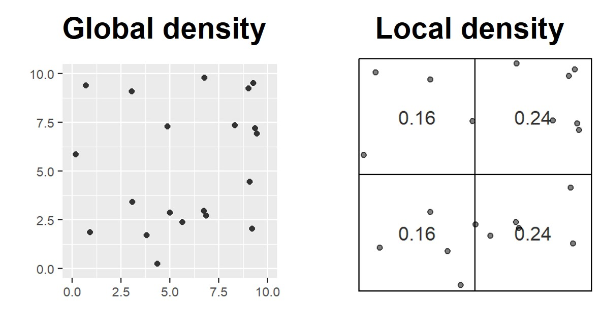
Kernel density estimation (Silverman 1986)
A method to compute the intensity of a point distribution.
The general formula:
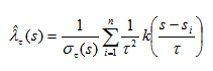
Graphically
KDE Step 1: Computing point intensity
KDE Step 2: Spatial interpolation using kernel function
KDE Map of Childcare Services, Singapore
Adaptive Bandwidth
Adaptive schemes adjust itself according to the density of data: - Shorter bandwidths where data are dense and longer where sparse.
Finding nearest neighbors are one of the often used approaches.
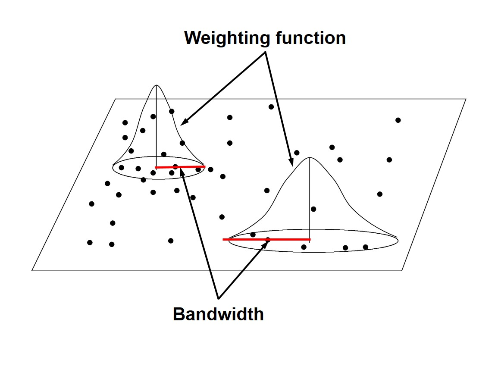
Fixed bandwidth
Might produce large estimate variances where data are sparse, while mask subtle local variations where data are dense.
In extreme condition, fixed schemes might not be able to calibrate in local areas where data are too sparse to satisfy the calibration requirements (observations must be more than parameters).
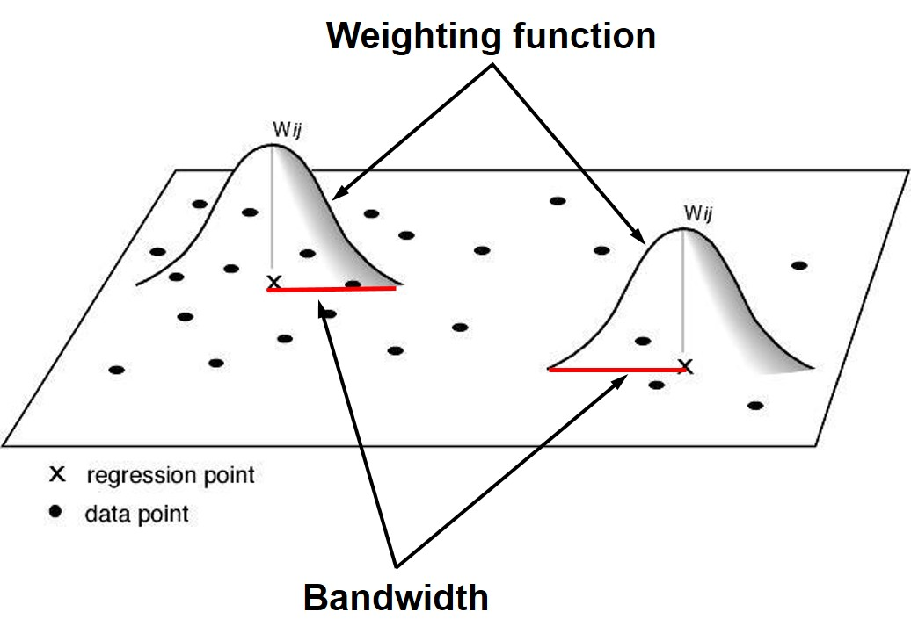
Quadrat Analysis – Step 1
Divide the study area into subregion of equal size,
often squares, but don’t have to be.
Quadrat Analysis – Step 2
Count the frequency of events in each region.
Quadrat Analysis – Step 3
Calculate the intensity of events in each region.
Quadrat Analysis – Step 4
Calculate the quadrat statistics and perform CSR test.
Quadrat Analysis – Variance-Mean Ratio (VMR)
For an uniform distribution, the variance is zero, - therefore, we expect a variance-mean ratio close to 0.
For a random distribution, the variance and mean are the same,
therefore, we expect a variance-mean ratio close to 1.
For a cluster distribution, the variance is relatively large,
therefore, we expect a variance-mean ratio greater than 1.]
Complete Spatial Randomness (CSR)
CSR/IRP satisfy two conditions: - Any event has equal probability of being in any location, a 1st order effect.
The location of one event is independent of the location of another event, a 2nd order effect.
If the quadrat size is too small, they may contain only a couple of points, and
If the quadrat size is too large, they may contain too many points.
It is a measure of dispersion rather than a measure of pattern.
It results in a single measure for the entire distribution, so variation within the region are not recognised.
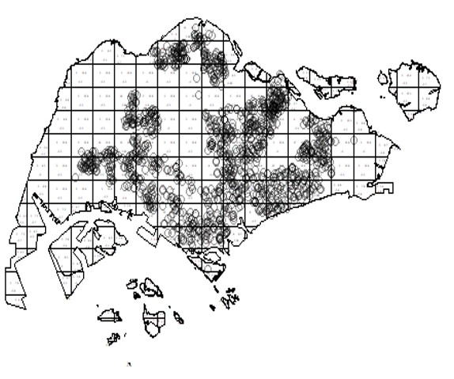
Distance-based: Nearest Neighbour Index
What is Nearest Neighbour?
Direct distance from a point to its nearest neighbour.
Nearest Neighbour Index
The Nearest Neighbour Index is expressed as the ratio of the Observed Mean Distance to the Expected Mean Distance.
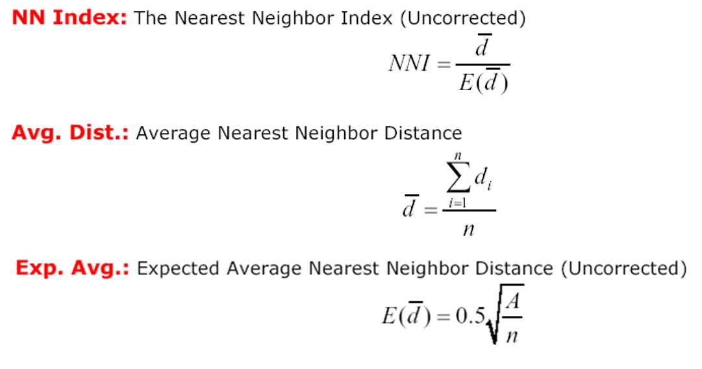
Calculating Nearest Neighbour Index
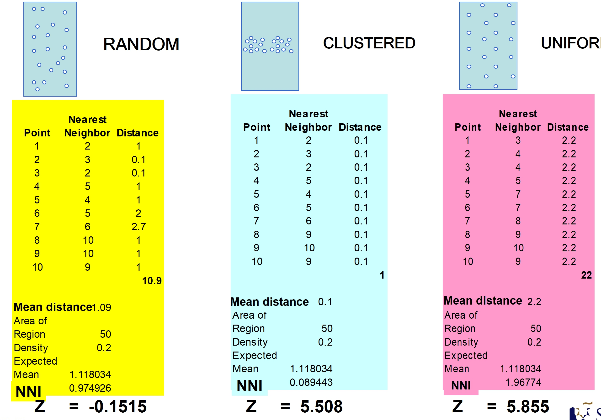
Interpreting Nearest Neighbour Index
The expected distance is the average distance between neighbours in a hypothetical random distribution.
If the index is less than 1, the pattern exhibits clustering,
If the index is equal to 1, the patterns exhibits random, and
If the index is greater than 1, the trend is toward dispersion or competition.
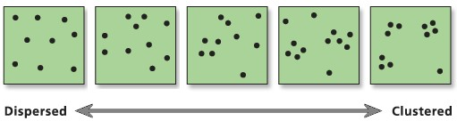
The test statistics
Null Hypothesis: Points are randomly distributed
Test statistics:
Reject the null hypothesis if the z-score is large and p-value is smaller than the alpha value.
Interpreting Nearest Neighbour Index
The p-value is smaller than 0.05 => Reject the null hypothesis that the point patterns are randomly distributed.
G function
The formula
Interpretation of G-function
The shape of G-function tells us the way the events are spaced in a point pattern.
Clustered: G increases rapidly at short distance.
Evenness: G increases slowly up to distance where most events spaced, then increases rapidly.
How do we tell if G is significant?
The significant of any departure from CSR (either cluster or regularity) can be evaluated using simulated “confidence envelopes”
Monte Carlo simulation test of CSR
Perform m independent simulation of n events (i.e. 999) in the study region.
For each simulated point pattern, estimate G(r) and use the maximum (95th) and minimum (5th) of these functions for the simulated patterns to define an upper and lower simulation envelope.
If the estimated G(r) lies above the upper envelope or below the lower envelope, the estimated G(r) is statistically significant.
The significant test of G-function
F function
Select a sample of point locations anywhere in the study region at random
Determine minimum distance from each point to any event in the study area.
Three steps:
Randomly select m points (p1, p2, ….., pn),
Calculate dmin(pi,s) as the minimum distance from location pi to any event in the point patterns, and
Calculate F(d).
The F function formula
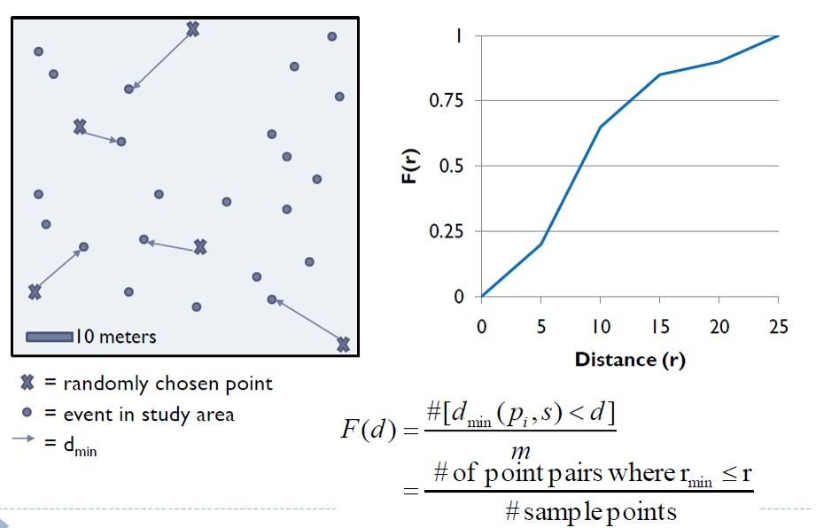
Interpretation of F-function
Clustered = F(r) rises slowly at first, but more rapidly at longer distances.
Evenness = F(r) rises rapidly at first, then slowly at longer distances.
The significant test of F-function
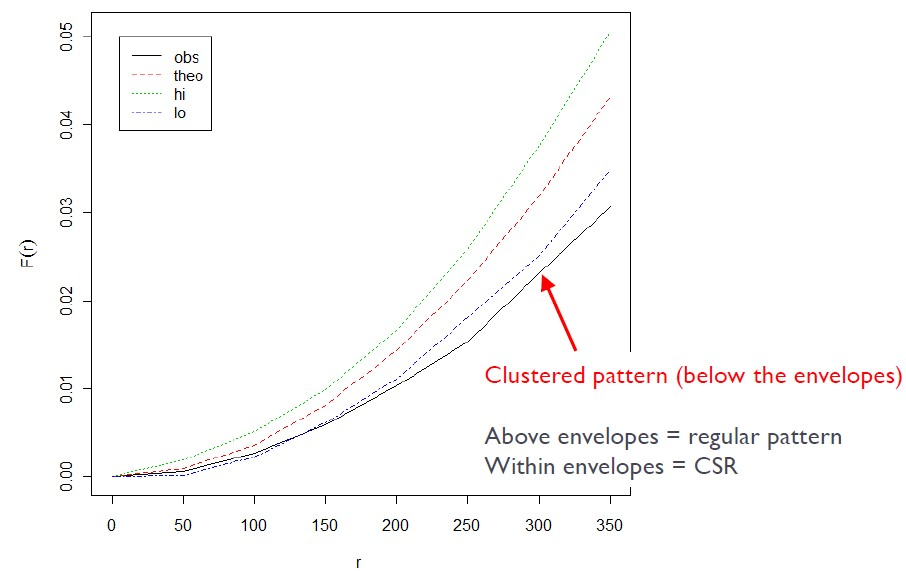
Comparison between G and F
Ripley’s K function (Ripley, 1981)
Limitation of nearest neighbor distance method is that it uses only nearest distance
Considers only the shortest scales of variation.
K function uses more points.
Provides an estimate of spatial dependence over a wider range of scales.
Based on all the distances between events in the study area.
Assumes isotropy over the region.
Calculating the K function
Construct a circle of radius h around each point event(i).
Count the number of other events (j) that fall inside this circle.
Repeat these two steps for all points (i) and sum results.
Increment h by a small amount and repeat the calculation.
K function
The formula:
The K function complete spatial randomness test
K(h) can be plotted against different values of h.
But what should K look like for no spatial dependence?
Consider what K(h) should look like for a random point process (CSR)
The probability of an event at any point in R is independent of what other events have occurred and equally likely anywhere in R
Interpreting the K function complete spatial randomness test
Under the assumption of CSR, the expected number of events within distance h of an event is:
Compare K(h) to ùúã‚Ñé^2
K(h) < ùúã‚Ñé^2 if point pattern is regular
K(h) > ùúã‚Ñé^2 if point pattern is clustered
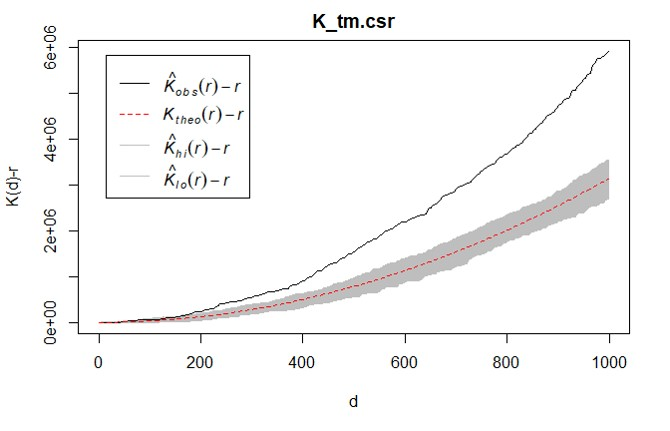
Above the envelop: significant cluster pattern - Below the envelop: significant regular
Inside the envelop: CSR
The L function (Besag 1977)
In practice, K function will be normalised to obtained a benchmark of zero.
The formula:
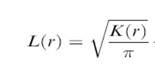
Interpreting the L function complete spatial randomness test
When an observed L value is greater than its corresponding L(theo)(i.e. red break line) value for a particular distance and above the upper confidence envelop, spatial clustering for that distance is statistically significant (e.g. distance beyond C).
When an observed L value is greater than its corresponding L(theo) value for a particular distance and lower than the upper confidence envelop, spatial clustering for that distance is statistically NOT significant (e.g. distance between B and C).
When an observed L value is smaller than its corresponding L(theo) value for a particular distance and beyond the lower confidence envelop, spatial dispersion for that distance is statistically significant. - When an observed L value is smaller than its corresponding L(theo) value for a particular distance and within the lower confidence envelop, spatial dispersion for that distance is statistically NOT significant (e.g. distance between A and B).
The grey zone indicates the confident envelop (i.e. 95%).
The L function (Besag 1977)
The modified L function
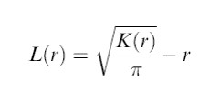
L(r)>0 indicates that the observed distribution is geographically concentrated.